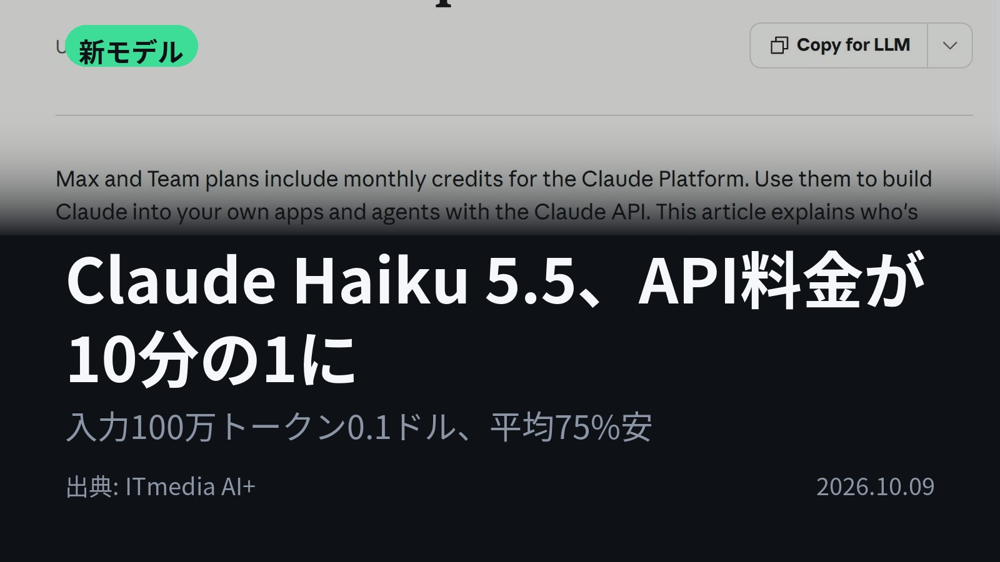
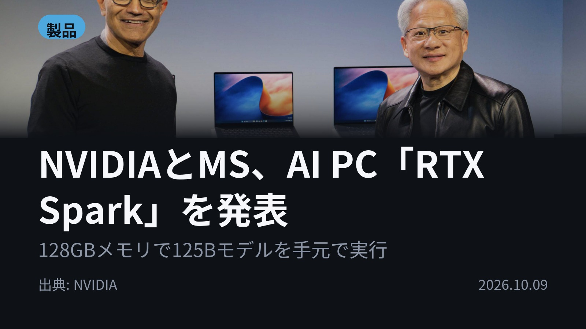
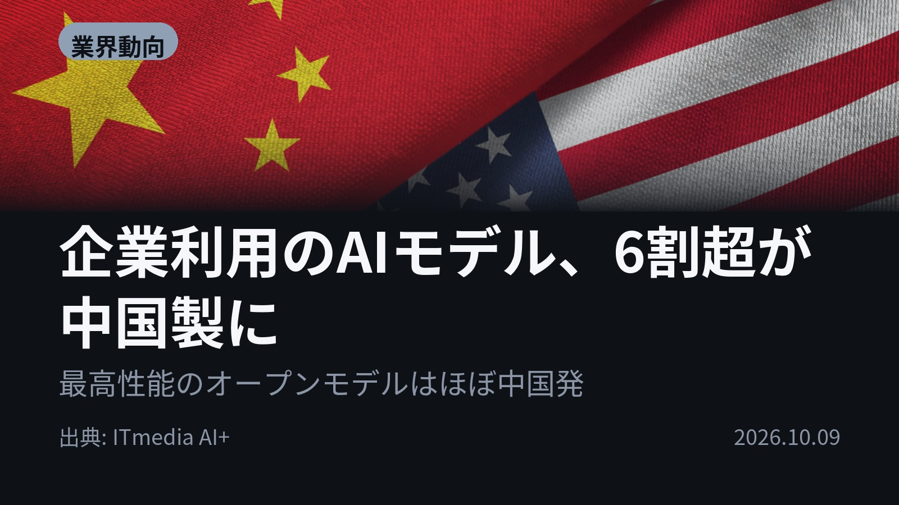
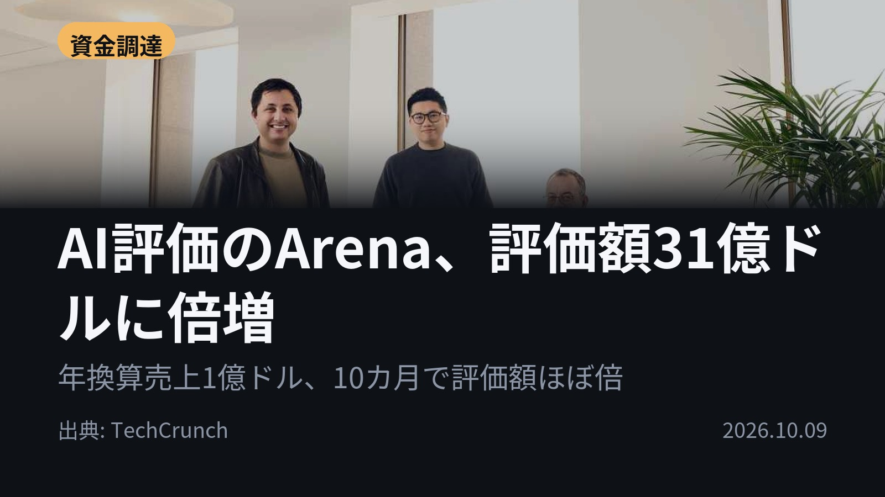
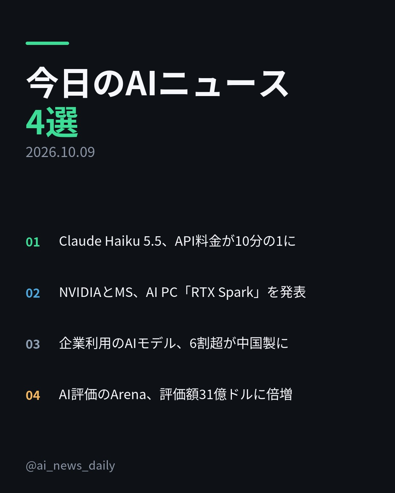
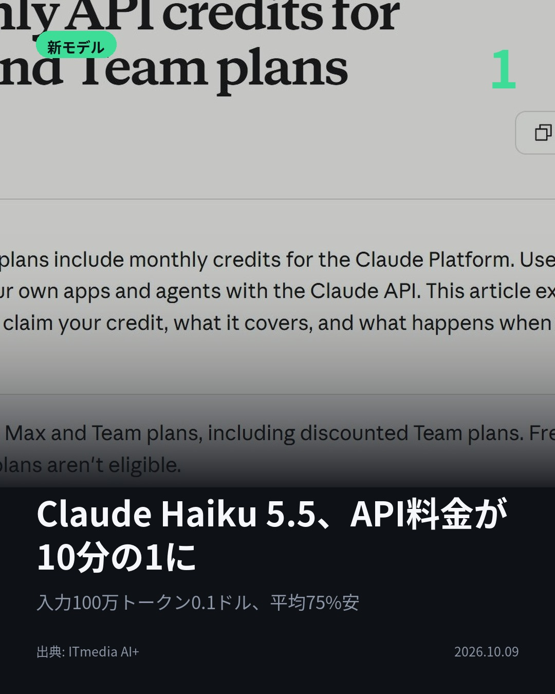
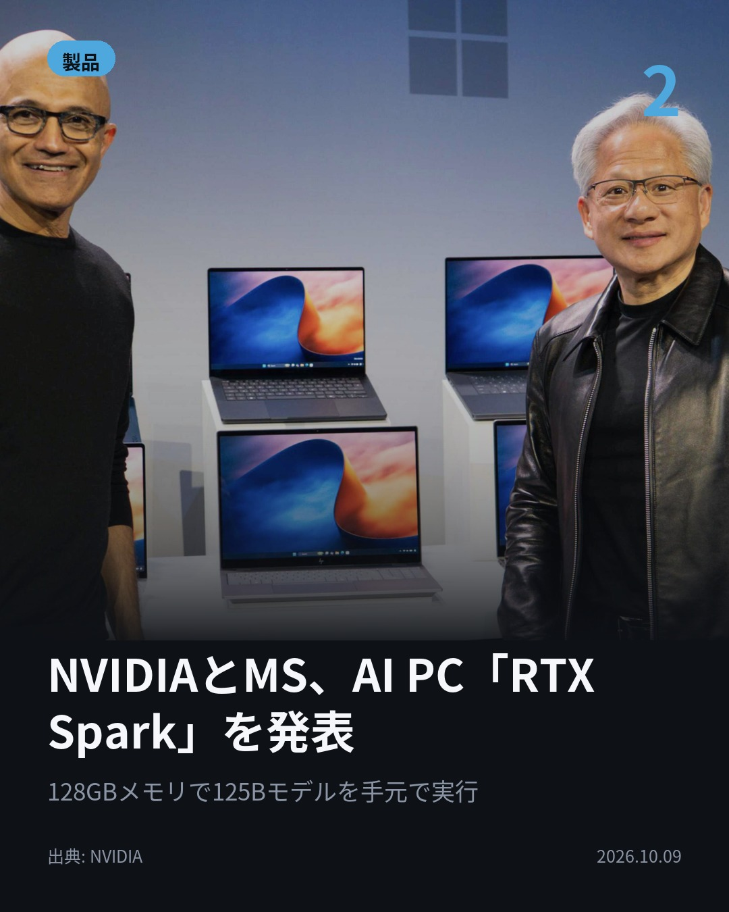
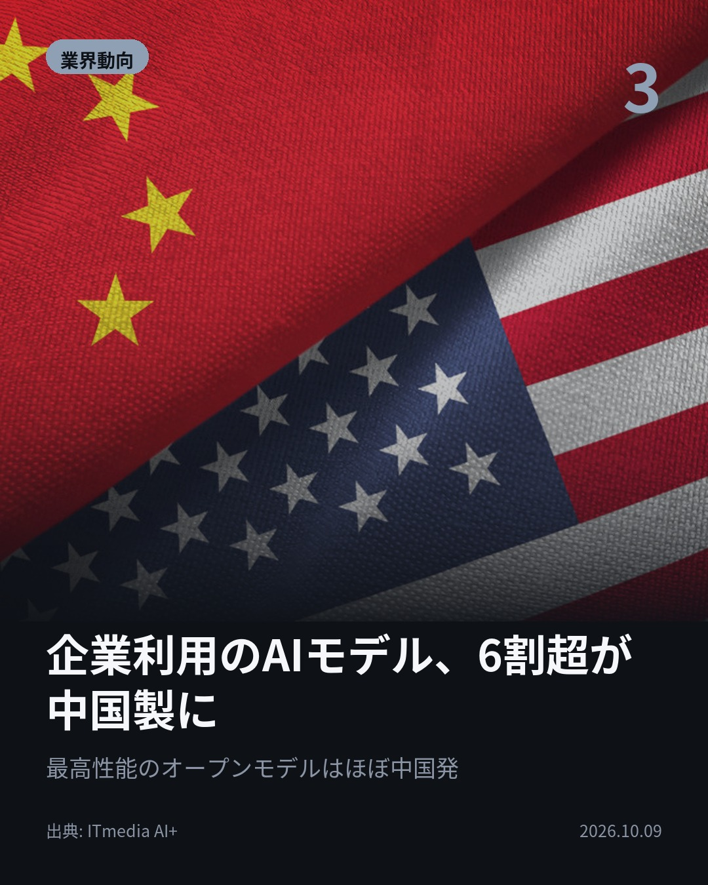
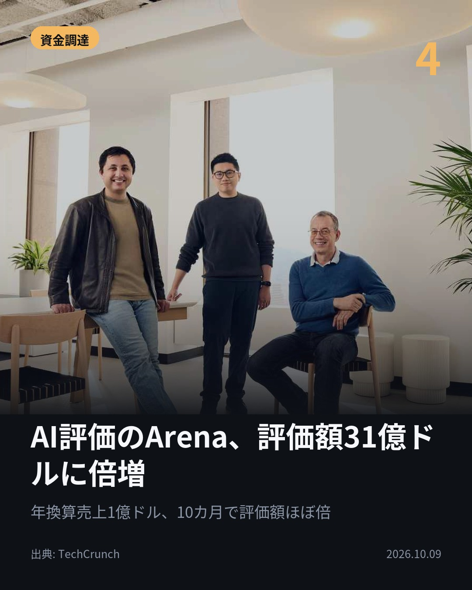

今日のAIニュース 下書き
2026-10-09 生成 10/09 20:21
⚠ ファクト照合で要確認の項目があります。
各ニュースの警告を確認してから投稿してください。
X（4投稿）
Claude Haiku 5.5、API料金が10分の1に
原題: Anthropic、「Claude Haiku 5.5」のAPI料金を「Haiku 4.5」の10分の1に 「Sonnet 5.5」のキャッシュ読み込み料金は半額に

Claude Haikuの料金が10分の1に。 Anthropicが「Haiku 5.5」を提供開始。10万トークン以下なら入力100万トークン0.1ドル（従来1ドル）。平均コストは約75%安いと試算。 #生成AI #Claude （出典: ITmedia AI+）
重み 194 / 280（見た目 130字）

NVIDIAとMS、AI PC「RTX Spark」を発表
原題: NVIDIA, Microsoft Kick Off a New Beginning for Windows PCs With RTX Spark and AI Agents

クラウド級のAIが、クラウドなしで動く。 NVIDIAとMicrosoftが「RTX Spark」を発表。最大128GB統合メモリで125Bのモデルをクラウドに送らず実行。ノートは10月16日発売。 #AI #NVIDIA （出典: NVIDIA）
重み 187 / 280（見た目 121字）
要確認:
［数値］10月 — この数値の根拠が本文に見つかりません
［数値］11月 — この数値の根拠が本文に見つかりません
［固有名詞］クラウド — この語が本文に見つかりません
［固有名詞］デスクトップ — この語が本文に見つかりません
［固有名詞］エージェント — この語が本文に見つかりません

企業利用のAIモデル、6割超が中国製に
原題: 企業が使うAIモデル、1年半で6割超が「中国製」に 「最高性能のオープンモデルはほぼ中国発」の理由

最高性能のオープンモデルは、ほぼ中国発だ。 企業が使うAIモデルは1年半で6割超が中国製に。RedMonkによると、例外は米NVIDIAの「Nemotron」など。 #生成AI #オープンモデル （出典: ITmedia AI+）
重み 184 / 280（見た目 112字）
要確認:
［数値］6割 — この数値の根拠が本文に見つかりません
［固有名詞］オープンモデル — この語が本文に見つかりません

AI評価のArena、評価額31億ドルに倍増
原題: Popular AI leaderboard Arena nearly doubles valuation to $3.1B valuation in 10 months

AIの「採点係」に、なぜ31億ドルの値がつくのか。 モデル比較サイトArenaが2億ドルを調達、評価額は10カ月でほぼ倍に。年換算売上は1億ドル。新設の整合性ランキングではOpenAI勢が上位を占めた。 #AI #Arena （出典: TechCrunch）
重み 214 / 280（見た目 126字）
要確認:
［数値］31億 — この数値の根拠が本文に見つかりません
［数値］2億 — この数値の根拠が本文に見つかりません
［数値］17億 — この数値の根拠が本文に見つかりません
［数値］3000万 — この数値の根拠が本文に見つかりません
［固有名詞］ランキング — この語が本文に見つかりません
［固有名詞］プロジェクト — この語が本文に見つかりません
［固有名詞］シリーズ — この語が本文に見つかりません
［固有名詞］TechCrunch — この語が本文に見つかりません

Instagram（カルーセル 6枚）


1. 表紙


2. ニュース


3. ニュース


4. ニュース


5. ニュース

6. CTA
入力100万トークン0.1ドル。Claudeの小型モデルが、前世代の10分の1の料金になりました。 ほかに、クラウド級AIが手元で動くPC、中国製モデルの台頭、AI評価サイトの急成長も。 1. Haiku 5.5は、推論の深さを選べる「effort」設定にHaikuクラスで初めて対応。10万トークンを超えるプロンプトは半額にとどまります。Sonnet 5.5もキャッシュ読み込みが半額になり、エージェント型の作業で約20%安くなるとしています。(ITmedia AI+) 2. RTX Sparkは、最大20コアのGrace CPUとBlackwell RTX GPUを600GB/sで接続。Surface Laptop Ultraが搭載し、Acer、ASUS、Dell、HPなども製品を出します。小型デスクトップは11月発売。Windowsには、エージェントをOSの管理下で安全に動かす基盤「MXC」が正式提供されました。(NVIDIA) 3. オープンモデル（重みが公開され、手元で動かせるAIモデル）では中国勢が主流に。RedMonkによると、最高性能のオープンモデルはほぼ中国発で、例外は米NVIDIAの「Nemotron」や米Thinking Machinesの「Inkling」などです。(ITmedia AI+) 4. Arenaは2023年にUC Berkeleyの研究プロジェクトとして始まり、利用者がどのモデルの回答が優れているかを評価する仕組みです。1月のシリーズAでは評価額17億ドル、年換算売上3000万ドルでした。新設の整合性ランキングでは、Claude Opus 5.5が6位です。(TechCrunch) 今日の4本では、AIの「価格」「動かす場所」「つくった国」「評価の仕方」がそれぞれ動きました。 毎朝4本、AIニュースを要点だけまとめています。あとで見返せるよう保存し、続きはフォローでチェックしてください。 #AI #生成AI #人工知能 #テクノロジー #AIニュース #ArtificialIntelligence #GenerativeAI #Claude #AI活用 #LLM #AIエージェント #TechNews #Anthropic #ClaudeHaiku #NVIDIA #RTXSpark #Microsoft #Windows #オープンモデル #中国AI #Arena #資金調達
1029字（Instagram上限 2,200字）
この日の選定理由
Claude Haiku 5.5、API料金が10分の1に
要約やサブエージェントなど、これまでコストが見合わなかった用途でもClaudeを使いやすくなります。小型モデルの価格競争が一段と進みそうです。
NVIDIAとMS、AI PC「RTX Spark」を発表
クラウド級のモデルをPC上で通信なしに動かせる時代が近づいています。Windowsはエージェントを安全に動かす基盤（MXC）も整え、PCの役割が変わりつつあります。
企業利用のAIモデル、6割超が中国製に
オープンモデルでは中国勢が主流になり、米国の規制論議とも重なっています。企業がどのモデルを選ぶかに、地政学のリスクが絡むようになりました。
AI評価のArena、評価額31億ドルに倍増
ベンチマークでモデルが高得点を取りにいく問題が広がり、中立的な第三者評価がビジネスとして成り立っています。新設の整合性ランキングでは首位をOpenAI勢が占め、Claude勢は6位と9位でした。